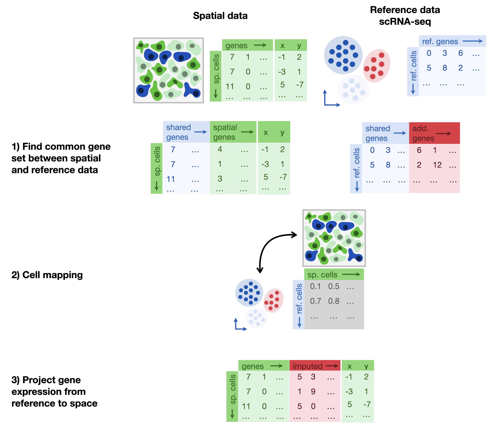
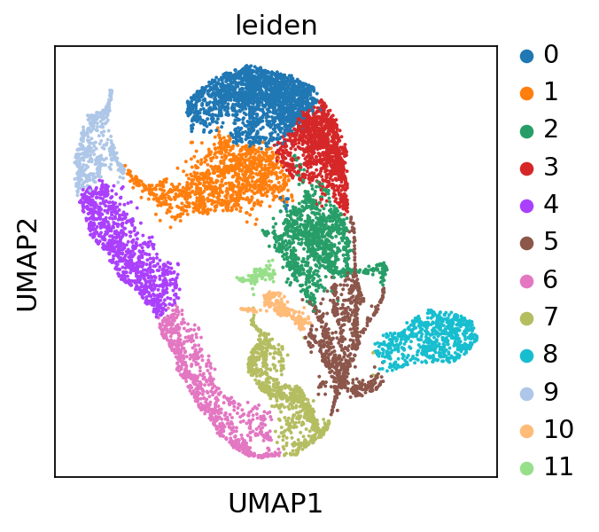
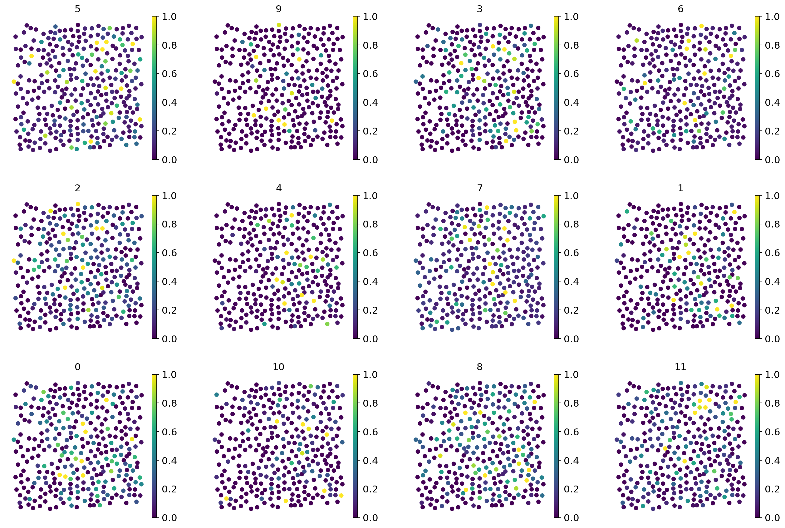

33. 插补#
关键要点
靶向原位（in-situ）技术（如 MERFISH、smFISH 或 seqFISH+）的基因通量有限，通常只能捕获数百个预先选定的基因。
插补（imputation）方法旨在提高基因维度上的分辨率，在单细胞分辨率下生成全转录组的空间解析数据。
在不同的准确度指标和可扩展性方面，Tangram 的表现优于其他插补方法。
在共有特征及其表达水平上运行一个验证步骤，有助于评估插补算法是否运行良好。
环境设置
安装 conda:
在创建环境之前，请确保 conda 已安装在您的系统中。
保存 yml 内容:
将 yml 选项卡中的内容复制到名为
environment.yml的文件中。
创建环境:
打开终端或命令提示符。
运行以下命令：
conda env create -f environment.yml
激活环境:
创建好环境后，使用以下命令激活它：
conda activate <environment_name>
替换
<environment_name>，名称就是在environment.yml文件中指定的那个。在 yml 文件里，它看起来像这样：name: <environment_name>
验证安装:
通过运行以下命令，检查环境是否创建成功：
conda env list
name: spatial
channels:
- defaults
- conda-forge
dependencies:
- conda-forge::python=3.12.12
- conda-forge::scanpy=1.12
- conda-forge::leidenalg
- conda-forge::pytorch-cpu
- conda-forge::pip
- pip:
- squidpy==1.8.1
- SpaGCN==1.2.7
- SpatialDE==1.1.3
- tangram-sc==1.0.4
- cell2location==0.1.5
33.1. 动机#
与基于点（spot）的空间转录组学不同，靶向原位技术（如 MERFISH、smFISH 或 seqFISH+）受限的不是空间分辨率，而是基因通量，通常只能测量数百个预先选定的基因。因此，我们面对的是一个正交的问题：要提高的是基因维度上的分辨率，而不是空间分辨率，也不是识别细胞特征。因此，我们希望对那些在 scRNA-seq 中测到、但在基于 FISH 的技术中未测到的基因进行插补（impute）。
33.2. 在不同技术之间构建映射#
在把空间分析测量与常见的 sc/snRNA-seq 表达谱对齐方面，有一种应用很广泛的方法叫 Tangram[Biancalani et al., 2021]。一项独立的基准评测[Li et al., 2022] 表明 Tangram 在多项指标上优于 gimVI 等其他插补方法[Lopez et al., 2019] 和 SpaGE[Abdelaal et al., 2020] （就不同的准确度指标和可扩展性而言）。虽然 Tangram 也可以用于前面介绍的反卷积场景，但这里我们关注它把 MERFISH 数据映射到全基因组表达谱的能力。Tangram 的基本思想是：借助一种共享的模态（通常是 RNA-seq 数据），对两种不同技术进行概率对齐。这样就可以克服在所测基因数量或空间分辨率上的限制。
Tangram 的映射算法基于手头两种技术的计数矩阵。对于 sc/snRNA-seq 数据，这意味着需要构建矩阵 \(S\) 其条目 \(S_{ik}\) 表示表达水平，对应于细胞 \(i\) 和基因 \(k\):
同样的过程也适用于空间数据。我们根据下式构建矩阵 \(G\) ：
对于 MERFISH 数据，一个体素（voxel）指的是把单基因测量汇总到单细胞；而对于 Visium，体素指的是单个的点（spot）。注意，体素维度上的具体顺序是任意的， \(n_{genes}\) 对应于两种技术中存在的基因共享子集。
Tangram 还进一步使用了一个体素密度向量 \(\textbf d\)。这种密度对应于估计得到的细胞密度，例如在 Visium 数据中可由图像分割推断得到。我们将其形式化地写作：
鉴于矩阵 \(S\) 和 \(G\) 以及密度 \(\textbf d\)，Tangram 旨在学习第三个矩阵 \(M\) ，它表示概率 \(M_{ij} \in [0,1]\) ，即细胞 \(i\) 属于体素 \(j\)。由于是概率性的，每个细胞必须恰好被映射一次，也就是说，矩阵的各行 \(M\) 必须归一化：
注意，跨细胞的总和表示分配给体素的细胞数目 \(j\)。已知\(S\)中的细胞数量后，我们便可估计体素密度为：
把所有部分组合在一起，我们就得到了 Tangram 的目标函数：
其中 \(M^TS\) 是预测的空间基因表达, \(\mathbb{KL}\) Kullback-Leibler 散度，以及 \(d_{\cos}\) 余弦相似度。第一项匹配预测出的体素密度 \(\textbf m\) 与估计数 \(\textbf d\)。第二项确保对每个基因 \(k\) ，其预测谱都与来自 \(G\)的期望谱相符。第三项对每个单独的体素起到同样的作用：预测出的体素表达应当接近参考所给出的期望体素表达。\(G\).
为了推断出 MERFISH 数据的基因组尺度表达图，我们首先确定共享的基因集，它应当包含约 \(\sim 200\) 个基因。其次，我们计算 \(S\) 和 \(G\) 矩阵，分别来自 sc/snRNA-seq 参考和空间实验。对于 MERFISH，体素密度的各项是均匀的 \(1/n_{\text{voxels}}\) 由于体素与细胞本身相对应。有鉴于此，我们只需要优化目标 \(L\) 并获得概率映射 \(M\).
推断整个基因组的空间表达 \(f_j\) 用于体素 \(j\),可以使用概率细胞分配计算加权和 \(f_j = \sum_i M_{ij} c_i\)，其中 \(c_i \in \mathbb{R}_+^{n'_\text{genes}}\) 是由 sc/snRNA-seq 得到的全基因组表达谱；也可以先通过下式计算出一个确定性映射 \(i^*(j) = \arg\max_i M_{ij}\) 然后将基因组尺度的表达谱构建为 \(f_j = c_{i^*(j)}\) .
33.3. 在练习中使用 Tangram#
{kind=link}

图33.1 插补方法借助一个全转录组的参考数据集，把细胞映射到空间上。Tangram 在共有基因集上学习参考数据集与空间数据集之间的映射矩阵。#
在进入本笔记本的分析之前，我们先搭建好运行环境。
import matplotlib.pyplot as plt
import pandas as pd
import scanpy as sc
import seaborn as sns
import tangram as tg
from sklearn.preprocessing import MinMaxScaler
sc.settings.verbosity = 3
sc.settings.set_figure_params(dpi=80, facecolor="white")
本教程使用的数据集通过多重误差稳健荧光原位杂交（MERFISH）测量，研究了胎肝中野生型造血干细胞（HSC）龛（niche）的空间组织和转录特征[Lu et al., 2021]。该数据集包含跨四个 E14.5 胎肝的 140 张图像，在 40,864 个细胞中观测了 132 个基因。Lu 等人[Lu et al., 2021] 还用 10x Genomics 平台对 E14.5 整个胎肝细胞进行了单细胞 RNA 测序，我们将把它用作本教程的全转录组参考。
我们将首先加载参考数据集。
adata_sc = sc.read(
filename="lu_scRNA_mouse_fetal_liver_2021.h5ad",
backup_url="https://figshare.com/ndownloader/files/39360860",
)
adata_sc
AnnData object with n_obs × n_vars = 9448 × 28692
var: 'chozen_isoform', 'code'
我们用来演示 Tangram 用法的单细胞 RNA-seq 参考没有注释。因此，我们先做一个基础的处理来获得 Leiden 聚类，之后可以把它投影到空间数据集上。
sc.pp.neighbors(adata_sc)
sc.tl.leiden(adata_sc, resolution=0.25)
sc.tl.umap(adata_sc)
sc.pl.umap(adata_sc, color="leiden")
computing neighbors
WARNING: You’re trying to run this on 28692 dimensions of `.X`, if you really want this, set `use_rep='X'`.
Falling back to preprocessing with `sc.pp.pca` and default params.
computing PCA
with n_comps=50
finished (0:00:19)
finished: added to `.uns['neighbors']`
`.obsp['distances']`, distances for each pair of neighbors
`.obsp['connectivities']`, weighted adjacency matrix (0:00:35)
running Leiden clustering
finished: found 12 clusters and added
'leiden', the cluster labels (adata.obs, categorical) (0:00:00)
computing UMAP
finished: added
'X_umap', UMAP coordinates (adata.obsm) (0:00:18)
{kind=link}

接下来，我们加载空间转录组学数据集。该 MERFISH 数据集包含来自 X 个不同视野（field of view，FOV）的数据。
adata_st = sc.read(
filename="lu_merfish_mouse_fetal_liver_2021.h5ad",
backup_url="https://figshare.com/ndownloader/files/39360836",
)
adata_st
AnnData object with n_obs × n_vars = 40864 × 132
obs: 'CellID', 'FOV', 'CellTypeID_new', 'cell_type'
obsm: 'spatial'
sc.pl.spatial(
adata_st[adata_st.obs.FOV == 0], color="cell_type", spot_size=50, frameon=False
)
{kind=link}
33.3.1. 参考数据集与空间数据集之间的共有基因集#
我们要选择训练基因。这些基因为两个数据集所共有，并且应当能够捕获不同细胞类型之间的生物学差异。为此，我们先在单细胞数据上计算标记基因，然后用 Tangram 的预处理函数，把它们取子集到空间数据中也存在的那些基因上。
markers = list(set.intersection(set(adata_sc.var_names), set(adata_st.var_names)))
len(markers)
132
tg.pp_adatas 执行以下操作：
计算单细胞数据与空间数据在
genes参数所提供的基因列表上的重叠将所得的基因集以
'training_genes'为名，存储在两个 adata 对象的.uns键下对基因进行一致排序
为了减少可能的命名错误，基因名称会被转换为小写。若要避免这一行为，请设置
gene_to_lowercase = False.
tg.pp_adatas(adata_sc, adata_st, genes=markers)
filtered out 10726 genes that are detected in less than 1 cells
INFO:root:132 training genes are saved in `uns``training_genes` of both single cell and spatial Anndatas.
INFO:root:132 overlapped genes are saved in `uns``overlap_genes` of both single cell and spatial Anndatas.
INFO:root:uniform based density prior is calculated and saved in `obs``uniform_density` of the spatial Anndata.
INFO:root:rna count based density prior is calculated and saved in `obs``rna_count_based_density` of the spatial Anndata.
让我们检查一下这个函数是否如我们所预期的那样运行：
assert "training_genes" in adata_sc.uns
assert "training_genes" in adata_st.uns
print(f"Number of training_genes: {len(adata_sc.uns['training_genes'])}")
Number of training_genes: 132
33.3.2. 计算从单细胞到空间体素的映射#
在指定了训练基因之后，我们现在可以构建从解离单细胞测量到空间位置的映射。为此，我们将使用 map_cells_to_space 函数。此函数有两种不同的模式, mode='cells' 和 mode='clusters'。后者只映射平均后的单细胞，这使得在不同标本之间映射时计算更快、更稳健。不过，由于我们关心的是对空间数据进行插补，我们将采用 cell（逐细胞）模式，而该模式可能需要使用 GPU 才能在合理时间内完成。
ad_map = tg.map_cells_to_space(
adata_sc,
adata_st,
mode="cells",
density_prior="rna_count_based",
num_epochs=500,
device="cuda", # or: cpu
)
INFO:root:Allocate tensors for mapping.
INFO:root:Begin training with 132 genes and rna_count_based density_prior in cells mode...
INFO:root:Printing scores every 100 epochs.
Score: 0.271, KL reg: 0.346
Score: 0.911, KL reg: 0.005
Score: 0.931, KL reg: 0.002
Score: 0.937, KL reg: 0.002
Score: 0.941, KL reg: 0.001
INFO:root:Saving results..
其结果 ad_map 本身是一个 AnnData 对象。让我们检查一下:
ad_map
AnnData object with n_obs × n_vars = 9448 × 40864
obs: 'leiden'
var: 'CellID', 'FOV', 'CellTypeID_new', 'cell_type', 'uniform_density', 'rna_count_based_density'
uns: 'train_genes_df', 'training_history'
我们观察到，Tangram 从细胞 i 到空间体素 j 的映射存储在 .X 属性中，对应的对象为 ad_map.
因此， .var 和 .obs 的含义也随之改变：
在
.var中存有空间数据的可用元数据，即adata_st在
.obs中存有单细胞数据的可用元数据，即adata_sc
此外，关于本次训练运行的信息存储在 .uns 键，参见 .uns['training_genes_df'] 和 .uns[training_history].
33.3.3. 将基因和细胞类型映射到空间#
我们可以用两种方式利用这一结果。首先，我们可以把原本只存在于单细胞数据中的细胞类型信息映射到空间上——通过查找已知的细胞类型分布模式，这是检验结果是否符合生物学的简便方法。其次，我们可以考察那些一开始并未用原位方法测量的基因的空间表达，从而有效地对所有缺失的基因进行插补。
# Project the cell annotation to spatial locations
tg.project_cell_annotations(ad_map, adata_st, annotation="leiden")
annotation_list = list(pd.unique(adata_sc.obs["leiden"]))
# Plot the spatial annotation
# The `perc` argument steers the range of the colourmap and can help with removing outliers.
tg.plot_cell_annotation_sc(
adata_st[adata_st.obs.FOV == 0], annotation_list, perc=0.02, spot_size=50
)
INFO:root:spatial prediction dataframe is saved in `obsm` `tangram_ct_pred` of the spatial AnnData.
{kind=link}

# To get a deeper sense, Tangram also computes several scores, which are readily plotted
tg.plot_training_scores(ad_map, bins=20, alpha=0.5)
{kind=link}
该分数总体上衡量的是原始测量（由空间技术得到）与单细胞数据推断出的映射之间的相似度。中间两个面板分别把训练基因各自数据（单细胞和空间）的稀疏性（每个点是一个训练基因）与所达到的分数关联起来。可以看到，性能与空间数据的相关性要大得多，而空间数据往往更稀疏，因此是造成低质量映射的主要原因。最后一个面板把两种技术放在一起对比：在空间数据和单细胞数据中稀疏程度相近的基因，通常比在两种技术间稀疏程度不一致的基因获得更好的分数。
次要评论:Tangram所依赖的相似性是余弦相似性。
更详细的信息可参见以下来源。.uns["train_genes_df"].
现在，我们可以将单细胞数据中的基因投射到空间位置。这只需将存储在 ad_map 中的映射矩阵，与存储在 adata_sc中的原始单细胞数据相乘即可。Tangram 已经提供了一个便捷函数，它接收一个映射及其对应的单细胞数据。所得结果是一个“空间体素 × 基因”矩阵，在技术上与原始空间数据 adata_st 完全相同，但包含所有基因的表达值。
ad_ge = tg.project_genes(adata_map=ad_map, adata_sc=adata_sc)
ad_ge
AnnData object with n_obs × n_vars = 40864 × 17966
obs: 'CellID', 'FOV', 'CellTypeID_new', 'cell_type', 'uniform_density', 'rna_count_based_density'
var: 'chozen_isoform', 'code', 'n_cells', 'sparsity', 'is_training'
uns: 'neighbors', 'leiden', 'umap', 'leiden_colors', 'training_genes', 'overlap_genes'
接下来，我们将把新的空间数据与原始测量进行比较。这能让我们更好地体会为什么某些训练分数可能较差。注意，Tangram 的这种显式映射所依赖的前提与概率模型完全不同。在这里，基于大多数训练基因良好的映射表现，我们倾向于相信预测出的基因表达模式。有些基因呈现出非常稀疏、分散的空间信号，这一点可以理解为空间技术的技术性 dropout，而非映射方法本身的缺陷。
genes = ["tek", "stab2", "hc"]
ad_map.uns["train_genes_df"].loc[genes]
| train_score | sparsity_sc | sparsity_sp | sparsity_diff | |
|---|---|---|---|---|
| tek | 0.966242 | 0.988357 | 0.918486 | -0.069872 |
| stab2 | 0.931371 | 0.977985 | 0.573561 | -0.404424 |
| hc | 0.929809 | 0.938400 | 0.694572 | -0.243827 |
ad_ge
AnnData object with n_obs × n_vars = 40864 × 17966
obs: 'CellID', 'FOV', 'CellTypeID_new', 'cell_type', 'uniform_density', 'rna_count_based_density'
var: 'chozen_isoform', 'code', 'n_cells', 'sparsity', 'is_training'
uns: 'neighbors', 'leiden', 'umap', 'leiden_colors', 'training_genes', 'overlap_genes'
# The comparison between original measurements on predicted ones is easily done with tangram
tg.plot_genes_sc(
genes,
adata_measured=adata_st[adata_st.obs.FOV == 0],
adata_predicted=ad_ge[ad_ge.obs.FOV == 0],
perc=0.02,
spot_size=50,
)
{kind=link}
33.3.3.1. 绘制不属于训练数据的基因#
我们还可以检查曾经是训练基因的一部分但在空间数据中未检测到的基因。
genes = ["rp1", "sox17", "mrpl15"]
tg.plot_genes_sc(
genes,
adata_measured=adata_st[adata_st.obs.FOV == 0],
adata_predicted=ad_ge[ad_ge.obs.FOV == 0],
perc=0.02,
spot_size=50,
)
{kind=link}
可以看到，Tangram 把这些额外特征投影到了空间上，现在我们可以获得所有额外基因及其在每个空间坐标上的估计值。
33.3.4. 在表达水平上进行验证#
对于插补任务，还可以增加一个步骤：验证用预测出的计数能否仍然还原出细胞类型特异的表达水平。为此，我们为每个聚类选取若干高表达的标记基因，并比较其归一化后的表达水平。为方便起见，我们使用 Lu 等人描述的标记基因。[Lu et al., 2021]，不过也可以在各聚类之间做一个简单的差异表达检验来识别标记基因。
control_markers = [
"tfrc",
"e2f2",
"abcb4",
"myh10",
"podxl",
"cd34",
"sdc3",
"pzp",
"hc",
"mrvi1",
"gnaz",
"vwf",
"kdr",
"stab2",
"flt4",
"col4a1",
]
fig, ax = plt.subplots(1, len(control_markers), figsize=(25, 6.8), sharey=True)
for i, marker in enumerate(control_markers):
# Retrieving measured counts
measured = sc.get.obs_df(adata_st, [marker, "cell_type"])
# Calculating measured expression levels
measured["expression_level"] = (
MinMaxScaler().fit(measured[[marker]]).transform(measured[[marker]])
)
# Retrieving measured counts
predicted = sc.get.obs_df(ad_ge, [marker, "cell_type"])
# Calculating predicted expression levels
predicted["expression_level"] = (
MinMaxScaler().fit(predicted[[marker]]).transform(predicted[[marker]])
)
sns.violinplot(
data=pd.concat(
[measured, predicted], keys=["measured", "predicted"], names=["sample"]
).reset_index(),
y="cell_type",
x="expression_level",
hue="sample",
split=True,
ax=ax[i],
)
ax[i].set_title(marker)
ax[i].set_xlabel("")
ax[i].set_ylabel("")
ax[i].get_legend().remove()
plt.tight_layout()
plt.show()
{kind=link}
返回的图为每个选定的标记基因给出一个子图，展示数据集中每种细胞类型对应的表达水平（归一化到 [0,1]）。可以看到，各聚类中标记基因的表达水平仍然能够被还原，且聚类内部的表达水平吻合得很好。这是一个很好的迹象，说明插补效果良好，我们可以把这套全转录组的空间解析数据集用于其他分析任务。
33.4. 参考文献#
Tamim Abdelaal, Soufiane Mourragui, Ahmed Mahfouz, and Marcel J T Reinders. SpaGE: Spatial Gene Enhancement using scRNA-seq. Nucleic Acids Research, 48(18):e107–e107, 09 2020. URL: https://doi.org/10.1093/nar/gkaa740, arXiv:https://academic.oup.com/nar/article-pdf/48/18/e107/33856246/gkaa740\_supplemental\_file.pdf, doi:10.1093/nar/gkaa740.
Tommaso Biancalani, Gabriele Scalia, Lorenzo Buffoni, Raghav Avasthi, Ziqing Lu, Aman Sanger, Neriman Tokcan, Charles R. Vanderburg, Åsa Segerstolpe, Meng Zhang, Inbal Avraham-Davidi, Sanja Vickovic, Mor Nitzan, Sai Ma, Ayshwarya Subramanian, Michal Lipinski, Jason Buenrostro, Nik Bear Brown, Duccio Fanelli, Xiaowei Zhuang, Evan Z. Macosko, and Aviv Regev. Deep learning and alignment of spatially resolved single-cell transcriptomes with Tangram. Nature Methods, 18(11):1352–1362, November 2021. URL: https://doi.org/10.1038/s41592-021-01264-7, doi:10.1038/s41592-021-01264-7.
Bin Li, Wen Zhang, Chuang Guo, Hao Xu, Longfei Li, Minghao Fang, Yinlei Hu, Xinye Zhang, Xinfeng Yao, Meifang Tang, Ke Liu, Xuetong Zhao, Jun Lin, Linzhao Cheng, Falai Chen, Tian Xue, and Kun Qu. Benchmarking spatial and single-cell transcriptomics integration methods for transcript distribution prediction and cell type deconvolution. Nature Methods, 19(6):662–670, June 2022. URL: https://doi.org/10.1038/s41592-022-01480-9, doi:10.1038/s41592-022-01480-9.
Romain Lopez, Achille Nazaret, Maxime Langevin, Jules Samaran, Jeffrey Regier, Michael I. Jordan, and Nir Yosef. A joint model of unpaired data from scrna-seq and spatial transcriptomics for imputing missing gene expression measurements. CoRR, 2019. URL: http://arxiv.org/abs/1905.02269, arXiv:1905.02269.
Yanfang Lu, Miao Liu, Jennifer Yang, Sherman M. Weissman, Xinghua Pan, Samuel G. Katz, and Siyuan Wang. Spatial transcriptome profiling by MERFISH reveals fetal liver hematopoietic stem cell niche architecture. Cell Discovery, 7(1):47, June 2021. URL: https://doi.org/10.1038/s41421-021-00266-1, doi:10.1038/s41421-021-00266-1.
33.5. 贡献者#
33.5.2. 审阅者#
Lukas Heumos